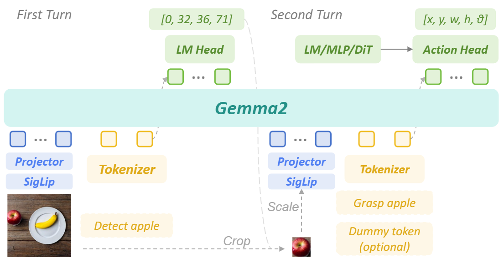
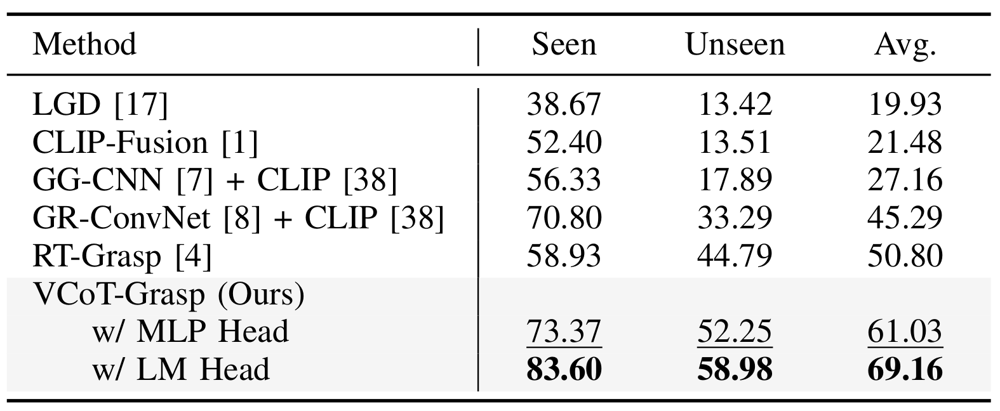
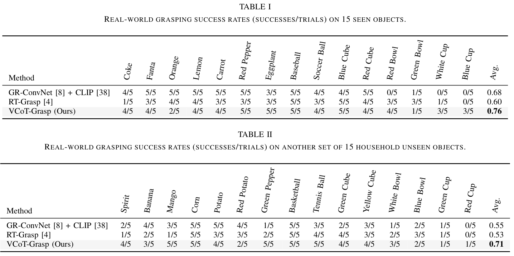
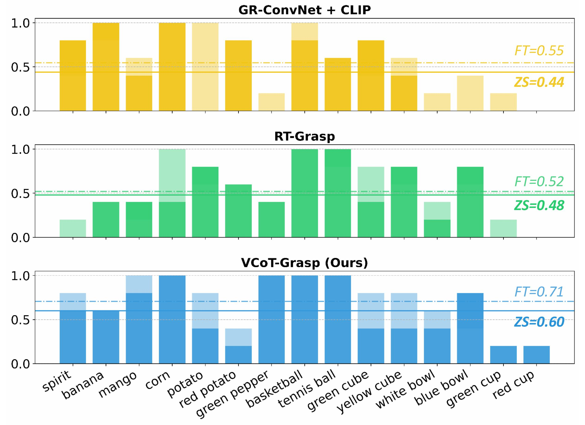
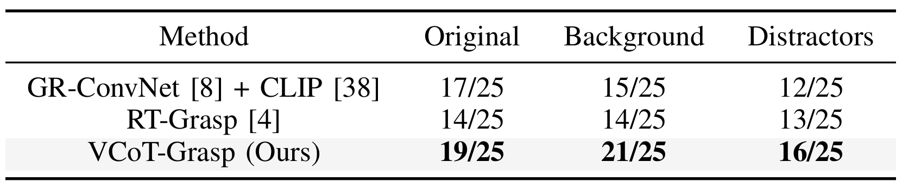

Robotic grasping is one of the most fundamental tasks in robotic manipulation, and grasp detection/generation has long been the subject of extensive research. Recently, language-driven grasp generation has emerged as a promising direction due to its practical interaction capabilities. However, most existing approaches either lack sufficient reasoning and generalization capabilities or depend on complex modular pipelines. Moreover, current grasp foundation models tend to overemphasize dialog and object semantics, resulting in inferior performance and restriction to single-object grasping. To maintain strong reasoning ability and generalization in cluttered environments, we propose VCoT-Grasp, an end-to-end grasp foundation model that incorporates visual chain-of-thought reasoning to enhance visual understanding for grasp generation. VCoT-Grasp adopts a multi-turn processing paradigm that dynamically focuses on visual inputs while providing interpretable reasoning traces. For training, we refine and introduce a large-scale dataset, VCoT-GraspSet, comprising 167K synthetic images with over 1.36M grasps, as well as 400+ real-world images with more than 1.2K grasps, annotated with intermediate bounding boxes. Extensive experiments on both VCoT-GraspSet and real robot demonstrate that our method significantly improves grasp success rates and generalizes effectively to unseen objects, backgrounds, and distractors. Our code and dataset will be made publicly available.





@misc{zhang2025vcotgraspgraspfoundationmodels,
title={VCoT-Grasp: Grasp Foundation Models with Visual Chain-of-Thought Reasoning for Language-driven Grasp Generation},
author={Haoran Zhang and Shuanghao Bai and Wanqi Zhou and Yuedi Zhang and Qi Zhang and Pengxiang Ding and Cheng Chi and Donglin Wang and Badong Chen},
year={2025},
eprint={2510.05827},
archivePrefix={arXiv},
primaryClass={cs.RO},
url={https://arxiv.org/abs/2510.05827},
}